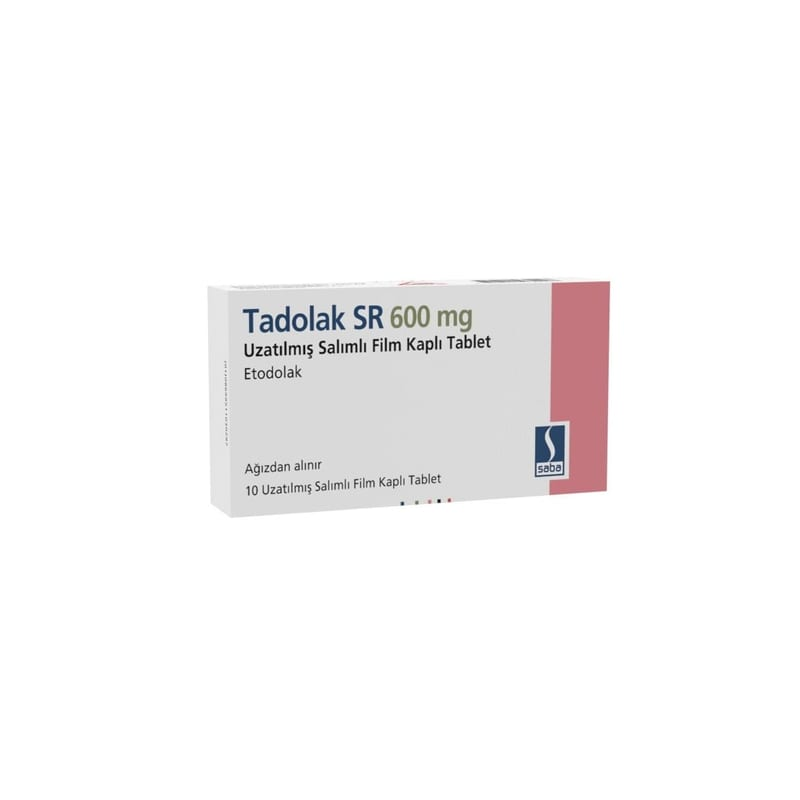

Tadolak SR 600 mg Uzatılmış Salımlı Film Kaplı Tablet, 10 Adet

Ne için kullanılır
KT · Bölüm 1TADOLAK SR, etkin madde olarak 600 mg etodolak içeren, beyaz renkli, oval, uzatılmış salımlı film kaplı tablettir. Uzatılmış salımlı film kaplı tablet ağız yolundan alındıktan sonra, vücutta ağır ağır salınarak gün boyu etkisini gösterir. Böylece günde 1 tablet almak yeterli olur. TADOLAK SR iltihapla oluşan karakterize durumların tedavisinde kullanılan (steorid içermeyen antiinflamatuvar) ilaç grubundandır.
TADOLAK SR aşağıdaki hastalıkların tedavisinde kullanılır: Dejeneratif eklem hastalığı, eklem kireçlenmesi (osteoartrit), Eklem iltihabı ile görülen romatizmal hastalık (romatoid artrit), Özellikle omurga eklemlerinde birleşme ve hareket kaybı ile görülen romatizmal bir hastalık (ankilozan spondilit),
Proteinin parçalanmasındaki bir soruna bağlı olarak zaman zaman ani şekilde ortaya çıkan, sıklıkla ayak başparmağındaki iltihapla kendini gösteren, eklemler üzerinde ileri derecede ağrıya, hassasiyete, kızarıklığa ve şişkinliğe neden olan eklem iltihabı (akut gut artriti), Akut kas iskelet sistemi ağrıları, Ameliyat sonrası görülebilen enflamasyon, şişkinlik ve yumuşak doku hasarı (post- operatif ağrı), Kadınlarda adet sancılarına bağlı ağrılarda (dismenore).